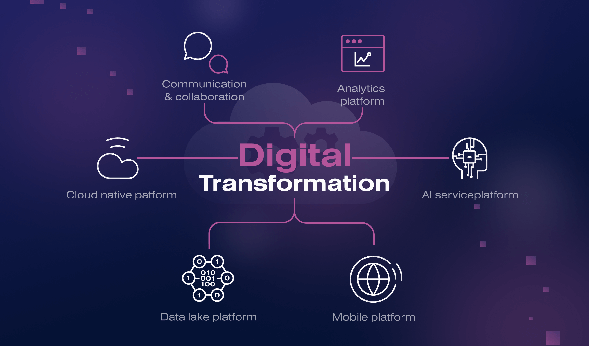

Challenges Facing African IT Professionals
1. Skills Shortage
Many companies struggle to find employees with the necessary technology skills to help them achieve their digital transformation goals. This is known as the IT talent shortage. Nearly 90% of IT leaders say recruiting and retaining tech talent is an ongoing challenge, according to Deloitte.
Top 5 In-Demand Tech Skills for 2025
- Artificial Intelligence (AI)
- Cybersecurity
- Data Science and Analytics
- Cloud Computing Skills
- Software Development and Programming
2. Digital Transformation
Digital transformation offers numerous benefits but also faces challenges such as resistance to change, legacy systems, lack of digital strategy, skill shortages, security issues, and ROI tracking difficulties.
3. Cloud Computing
Cloud computing is revolutionizing how businesses operate, but also brings challenges such as data security, cost management, and integration with existing infrastructure.
4. Budget

Budgeting issues in tech include adapting to rapid changes, cost underestimation, and outdated infrastructure. Solutions involve prioritization, resource optimization, and flexible budgeting.
5. Project Management

Tech project management requires handling fast-paced change, scope creep, and resource balancing. Strong communication, risk control, and stakeholder involvement are key.
6. Leadership

Leaders in tech must manage innovation, cybersecurity, team cohesion, talent acquisition, and inclusive communication while driving performance and growth.